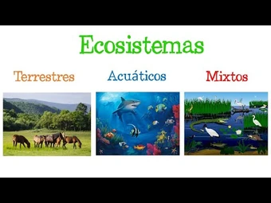
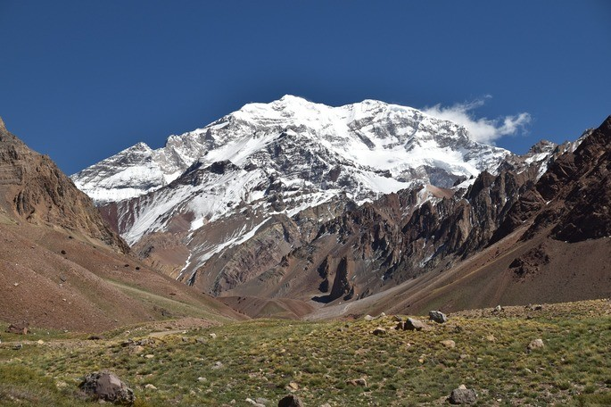
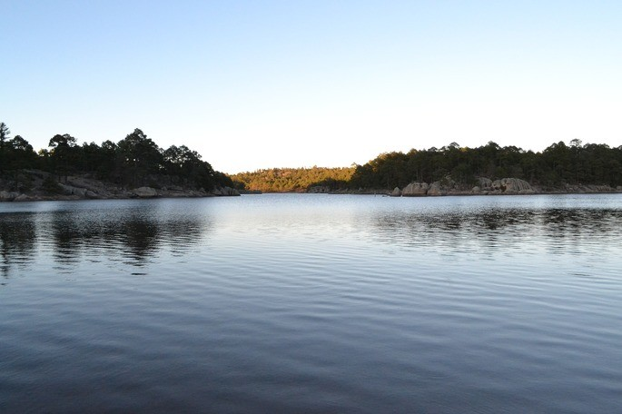
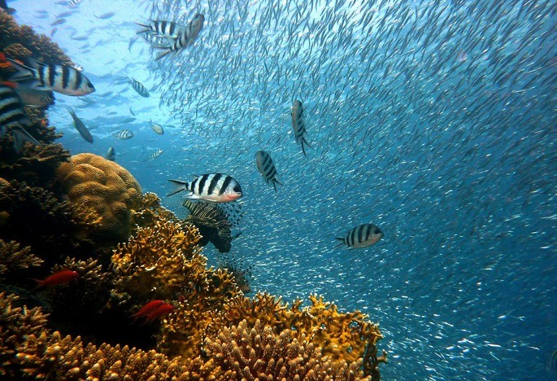
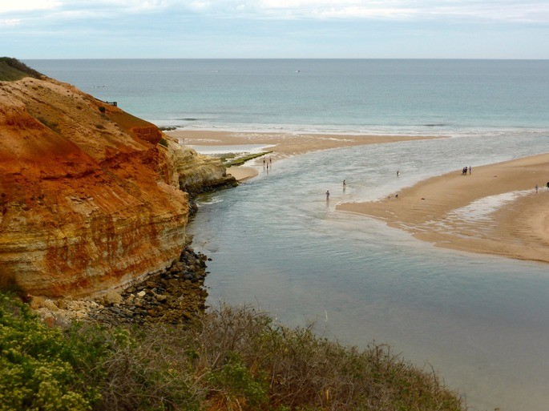

En biología, un ecosistema es un sistema que está formado por un conjunto de organismos, el medio ambiente físico en el que viven (hábitat) y las relaciones tanto bióticas como abióticas que se establecen entre ellos. Las especies de seres vivos que habitan un determinado ecosistema interactúan entre sí y con el medio, determinando el flujo de energía y de materia que ocurre en ese ambiente.
COMPONENTES DE UN ECOSITEMA
Elementos bióticos: Son aquellos elementos de un ecosistema que poseen vida, es decir, todos los seres vivos que lo habitan Por ejemplo: la flora y la fauna.
Elementos abióticos. Son aquellos factores sin vida que forman parte de un ecosistema. Por ejemplo: condiciones climáticas, relieve, variación del pH, presencia de luz solar.
Es muy importante tener en cuenta que las relaciones que se establecen entre los elementos bióticos y abióticos también son consideradas un elemento más que forma un ecosistema determinado.

TIPOS DE ECOSISTEMAS
ECOSISTEMAS TERRESTRES
Los ecosistemas terrestres se desarrollan principalmente sobre la tierra o terreno sólido en la superficie del planeta. El terreno puede ser roca, suelo, arena o hielo. La vegetación en los ecosistemas terrestres es la más amplia y diversa y de ella depende la diversidad de los organismos consumidores y depredadores. 
Tipos de Ecosistemas Terrestres
Ecosistema montañoso o alpino: son los ecosistemas que se establecen por arriba de la línea montañosa donde ya no crecen los árboles. Por ejemplo, la cordillera del Himalaya por arriba de los 6000 m, la cordillera de los Andes por arriba de los 3500 m.
Matorrales xerófitos: predominan los arbustos, las suculentas y los magueyes en climas áridos. Por ejemplo, la región de Cataviña en Baja California.
Bosque tropical o selva: existen donde la lluvia es moderada a alta y las temperaturas se mantienen por arriba de los 24 C la mayor parte del año. Por ejemplo, la selva Lacandona en Chiapas y Los Tuxtlas en Veracruz.
Ecosistemas desérticos: se caracterizan por la aridez y la falta o muy poca vegetación. Por ejemplo, el desierto de Chihuahua y de Sonora en México.
ECOSITEMAS ACUATICOS
Los ecosistemas acuáticos se desarrollan en el agua dulce de ríos, arroyos y lagos. Presentan una diversidad de animales acuáticos, como peces, invertebrados y mamíferos. 
Tipos de Ecositemas Acuaticos
Ríos: son cursos de agua dulce que fluyen desde las zonas más altas hasta regiones bajas. Por ejemplo, el río Papaloapan y Coatzacoalcos.
Lagos de agua dulce: son reservas de agua dulce en la superficie terrestre. Por ejemplo, el lago de Arareco y el lago de Cuitzeo.
ECOSISTEMAS MARINOS
Los ecosistemas marinos se desarrollan en mares y océanos. Se caracterizan por tener una flora y una fauna adaptada para obtener sus recursos a partir del agua salada: algas, fitoplancton, zooplancton y peces. Son los ecosistemas más extensos del planeta Tierra. 
Tipos de Ecositemas Marinos
Arrecifes de coral: estructuras submarinas construidas por invertebrados llamados corales, donde se establece interacciones entre algas, corales, peces, crustáceos, delfines, entre otros. Por ejemplo, Parque Nacional Sistema arrecifal Veracruzano y parque nacional Cabo Pulmo.
Océano abierto: los océanos cubren gran parte de la Tierra y tienen grandes variaciones en sus componentes bióticos y abióticos, que dependen de la latitud y de la profundidad del agua.
Bosques de macroalgas: las algas forman un bosque que puede extenderse por hectáreas y que sirven de alimento y refugio de muchos animales marinos.
ECOSISTEMAS MIXTOS
Los ecosistemas mixtos se encuentran en las fronteras entre ecosistemas de diferentes medios. 
Tipos de Ecostemas Mixtos
Ecosistemas marino-acuático-terrestre: los estuarios son ecosistemas que se establecen donde el agua de mar y el agua de río se consiguen en las desembocaduras de los ríos.
Ecosistema marino-terrestre: se concentra en la zona de marea alta y de marea baja en terrenos rocosos.
Ecosistema terrestre-acuático: se presentan en las zonas donde la tierra queda inundada por ríos, por ejemplo los humedales y los pantanos.
CONSUMISMO
¿QUE ES EL CONSUMISMO?
Se conoce como consumismo, sobreconsumo o consumo irresponsable a una dinámica de consumo exacerbado de bienes y servicios, es decir, a la tendencia a consumir en demasía, de manera exagerada o frenética, sin prestar demasiada atención a si lo comprado es realmente necesario o no.
Al mismo tiempo, el consumismo es una doctrina sociocultural y una creencia, que propone la adquisición de posesiones materiales como la única vía hacia la satisfacción personal, y que distinguen entre las personas en base a su mayor o menor capacidad de consumo.
El consumismo es una tendencia presente en las sociedades capitalistas postindustriales, especialmente en aquellas cuyos ciudadanos poseen altos ingresos y por lo tanto mucha capacidad de consumo.
Por otro lado, el consumismo es radicalmente opuesto al consumo responsable o a la sustentabilidad: quienes practican el consumismo (“consumistas”) no se preocupan por la perdurabilidad de la sociedad ni por el daño ecológico que su modo de vida ocasiona, sino que se entregan al frenesí de la compra y la acumulación.
Por otro lado, el consumismo suele ser promovido por el marketing y la publicidad, ya que el consumo constante y masivo crea demanda allí donde no la había o había poca, y provee a las empresas de un escenario ideal para sus productos. En cambio, muchos sectores sociales, ecologistas y progresistas critican las posturas consumistas y las acusan de llevar adelante un despilfarro cuyas consecuencias serán dramáticas para las generaciones venideras.
TIPOS DE CONSUMISMO
Consumo experimental. Se llama así a la adquisición de un producto o servicio que se desea probar, que no se conoce de antemano y que por lo tanto puede desembocar en un consumo ocasional o habitual, o simplemente no repetirse en el tiempo. Es lo que ocurre cuando aparece un nuevo producto o una nueva marca en el mercado.
Consumo ocasional. También llamado consumo intermitente, no se rige por patrones sino que es esporádico, casual, dependiendo de la disponibilidad de los bienes o servicios demandados y de la situación financiera, social e individual del consumidor.
Consumo habitual. También llamado consumo regular, es aquel que se lleva a cabo con frecuencia, en el que uno o varios bienes son consumidos de manera continua y constante, como los productos básicos o de primera necesidad. Los alimentos, por ejemplo, suelen estar en esta franja.
Consumo extraordinario. A esto se refiere quien habla de “compras nerviosas” o “compras impulsivas”, y suelen darse en los momentos previos a un gran evento de importancia política, social o histórica, o bien en los momentos inmediatamente posteriores. Son una forma de reacción defensiva de los consumidores, y suelen caracterizarse por hacer foco en bienes básicos y fundamentales, o en aquellos que corran riesgo de escasear.
Consumo responsable. Lo exactamente contrario al consumismo: una forma de consumir que es consciente de las consecuencias de la compra de un producto, tanto en la vida individual como social y medioambiental, y que privilegia productos seguros y de poco riesgo a aquellos que brinden un placer inmediato y momentáneo a un costo muy alto para las generaciones futuras.
CONCECUENCIAS DE CONSUMISMO
Crea demanda donde no la había, o incentiva la demanda de un producto determinado por encima de otros, especialmente aquellos de bajo precio y baja calidad. Esto contribuye a la mala distribución de la riqueza, pues usualmente son las clases medias y bajas las que consumen de manera continua bienes baratos producidos en masa, invirtiendo su dinero en objetos que no duran nada y que brindan poco beneficio.
Producción continua y excesiva de basura, ya que los residuos de los productos, especialmente los de vida breve, se acumulan en el medio ambiente y pueden tardar miles de años en descomponerse. Esto, a su vez, causa estragos en el delicado balance biótico del planeta.
El consumo masivo de productos industrializados de baja calidad, especialmente los alimenticios, trae consigo consecuencias en la salud individual, familiar y regional, causando enfermedades como la obesidad y la diabetes.
La preferencia masiva de ciertos productos por encima de otros, especialmente los de un solo uso por encima de los más duraderos, conducen al desbalance económico y comercial entre países y regiones enteras, empujando los ciclos del capitalismo hacia crisis más frecuentes y agudas.
HUELLA ECOLOGICA
¿QUE ES LA HUELLA ECOLOGICA?
La huella ecológica, también conocida como huella medioambiental, es una forma de medir el impacto que la humanidad ejerce sobre el planeta. Es la superficie ecológicamente productiva necesaria para producir los recursos consumidos por un individuo, así como la necesaria para absorber los residuos que genera.
Se utiliza como indicador de sostenibilidad de escala internacional, para medir el impacto de nuestros hábitos en el entorno.
¿COMO REDUCIR LA HUELLA ECOLOGICA?
Disminuir el uso del aire acondicionado en verano. Desenchufar los aparatos electrónicos cuando no se estén usando. Secar la ropa de manera natural sin necesidad de usar la secadora. Evitar los productos de un solo uso y, en caso de hacerlo, buscar siempre la manera de reciclarlos de manera correcta.